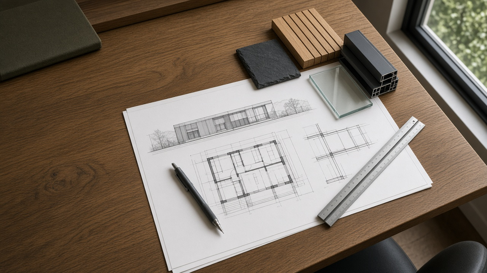
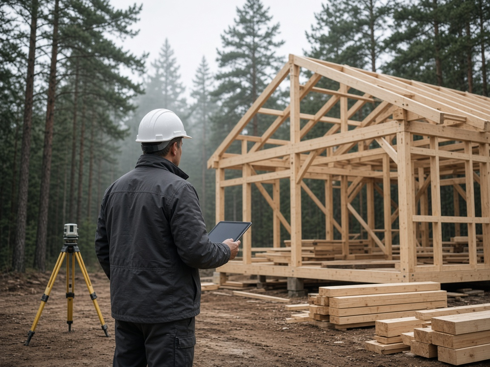

Регламент · От заявки до акта
Как мы работаем
Пять фиксированных этапов: бриф, эскиз и смета, договор, производство или стройка, сдача с гарантией. Смета закрепляется в договоре — без скрытых доплат.
Последовательность работ
Пять этапов от первой консультации до сдачи
Каждый этап закрывается понятным результатом: зафиксированная задача, согласованная смета, подписанный договор, контроль на объекте и акт с гарантией.
-
Этап 01
Консультация и бриф
1–2 рабочих дняУточняем задачу, участок или проёмы, бюджет и сроки. При необходимости выезжаем на объект или работаем по чертежам и фотографиям.
РезультатЗафиксированная задача, исходные данные объекта и согласованный следующий шаг.
-
Этап 02
Эскиз и смета
2–5 рабочих днейГотовим варианты технологии, комплектации и ориентировочную стоимость. Эскизный расчёт — бесплатно, без обязательства заключать договор.
РезультатЭскиз и предварительная смета с вариантами комплектации под задачу и бюджет.
-
Этап 03
Договор и фиксация
По согласованию сметыСогласовываем спецификацию, календарный план и условия оплаты. Смета фиксируется в договоре — без скрытых доплат в процессе работ.
РезультатДоговор, спецификация и график с закреплённой сметой.
-
Этап 04
Производство / стройка
По календарному плануСобственный цех ПВХ, поставка алюминия и бригада на объекте. Регулярные отчёты по узлам и промежуточным приёмкам — фото, видео, чек-листы.
РезультатКонструкции в работе и прозрачный контроль скрытых узлов до финишной приёмки.

Выезд инженера и контроль геометрии каркаса на объекте -
Этап 05
Сдача и гарантия
В день приёмкиСовместная приёмка, акт выполненных работ и гарантийные обязательства на конструкции и монтаж. Поддержка после сдачи — по условиям договора.
РезультатПодписанный акт сдачи и гарантия, действующая с даты приёмки.
Принципы
Что вы получаете на каждом проекте
-
01
Одна точка ответственности
Окна, алюминиевые конструкции и коробка дома — в одном договоре, без размытой зоны между подрядчиками.
-
02
Собственный цех ПВХ
Производство в Шушарах: размеры, армирование и стеклопакеты собираем сами, без перепродажи чужого контура.
-
03
Своя бригада
Монтаж и строительство ведём собственной бригадой. Без «случайных» подрядчиков на скрытых узлах.
-
04
География — вся РФ
База в Санкт-Петербурге, посёлок Шушары. Поставка, бригады и сервис — по согласованному графику по стране.
Следующий шаг
Готовы обсудить ваш объект?
Расскажем, какая технология подойдёт под участок, климат и бюджет — без навязывания комплектации.